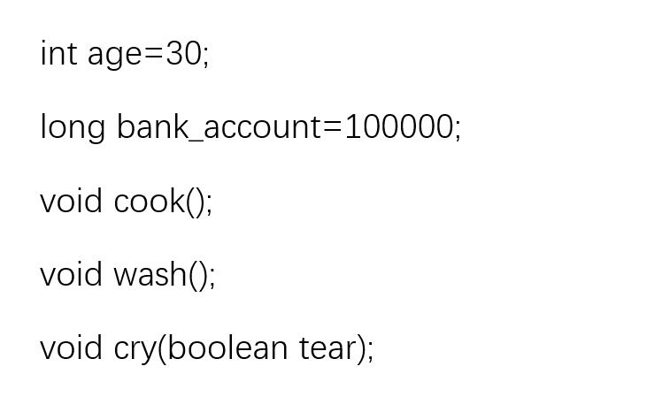

Java Week3
Advanced java programming
This section introduces some of the advanced features of Java.
Interfaces
1. What is interface?
An interface is like a 100% abstract class. An interface allows polymorphic capabilities without the problems of multiple inheritance.
Since an interface has NO implemented methods, multiple inheritance is not a problem, as no class inherits a "finished" method.
2. Multiple interfaces
Can implement as many interfaces as you need! Since no code is actually inherited (no generic methods), you have no confusion as to which method the class you written has inherited!
3. extends and implements
A class can only extend 1 class: meaning 1 class can only have 1 parent;
A class can implement as many interfaces as it likes!
4. Use it actually
At design time, we can write code that needn’t worry about the implementation of any class that implements Flyable (or BigBadies or Teleportable)
Interfaces are then like certificates, which say “I provide these services”.
–We can treat the implementation as a black box, and rest safe in the knowledge that it must provide fly().
–You can’t make an instance of an interface,
so e.g., Flyable friend = new Flyable(); // ERROR!
5. Abstract Classes & Interfaces
Neither abstract classes and interfaces can have an instance made of them.
If you don’t provide any method implementation, then use an interface instead of an abstract class.
A class can implement many interfaces, but only extends one superclass.
Interfaces are how Java provides (a kind of) multiple inheritance.
If even one method in a class is declared to be abstract, then the whole class must be declared abstract.
Both abstract classes and interfaces can contain constants, which will be inherited by classes that extend or implement them, respectively.
6. Extending an Interface

Child inherits from Father and Mother and has the following:
7. Name Conflicts
What happens if Father interface and Mother interface contain same named methods and variables(constants)? –Same named methods:
If they have different parameters, then Child interface has both (this is same as overloading).
If they differ by only return type, then error.
If the two methods are identical, only keep one. –Same named constants: we keep both constants. To refer to them, use parent interface name as prefix.
Example: –If both Father and Mother contain an age variable, then Child interface contains both. –To refer to them, we use: Father.age or Mother.age.
8. Multiple Inheritance in Java
Java’s “multiple inheritance” is at interface level only!
Only interfaces can do multiple inheritance… at design level.
If you’ve already got class A and class B, and you want to extend A and B together to generate class C, forget about it. You can’t do that!
Garbage Collection
1. Heap versus Stack
Running a Java program: –Memory is obtained by the JVM, from the OS being used.
Two main areas of memory in Java:
(Garbage-collectible) Heap (where objects live);
Stack (where local variables and methods, when called, live).
2. Local Variables & Instance Variables
Main types of variables we care about: –Local (also known as stack) variables
Variables declared in a method and method parameters.
Temporary variables, alive only when the method they belong to is on the Stack. –Instance variables
Variables declared in a class (not inside of a method).
Live inside the object they belong to.
3. Methods and the Stack
Method goes on top of the Stack when it is called and stays in the Stack until it’s done (closing curly brace).
Stack frame:
What actually is pushed onto the Stack.
Contains the state of the method (which line of code is executing and values of all local variables).
Method at top of the Stack is always the method being executed.
4. Object References & Where Variables Live
Object reference(aka non-primitive) variables:
Hold a reference to an object, not the actual object.
A local variable that is a reference to an object goes on the Stack (the object it refers to still goes on the Heap).
Where variables (primitive and non-primitive types) live:
Local variables (on the Stack)
Instance variables (on the Heap)
5. Initialising Object State
Using a constructor to initialise object state(i.e. instance variables):
Most common use of constructors.
Constructors: the best place to put initialisation code.
Programmers should always write a “no arguments” constructor (to build an object with default values): makes things easier for the program’s users.
6. Overloaded Constructors
When you have more than one constructor in a class.
Must have different argument lists (it’s the variable type and order that matters);
There may be cases where a no-arguments constructor makes no sense (e.g. making a Color object).
7. Calling and Making Constructors
Calling a superclass constructor:
using super() calls the super constructor;
using super() in your constructor puts the superclass on the top of the stack.
Compiler and making constructors:
if no constructor is provided, the compiler adds one that looks like: public ClassName() { super(); }
if you provide a constructor but do not add a call to super(), the compiler puts such a call in each of your overloaded constructors.
8. Using super()
The call to super() must be the first statement in a constructor.
You can pass arguments into a call to super().
Just like: public Dog() { super(); }
9. Life of Objects and Variables
Life of an object: depends only on the life of reference variables referring to it.
Variable lifetime:
same for primitive and reference variables;
different for local and instance variables.
Life duration:
local variables:live only within the method that declared it (also referred to as being in scope);
instance variables: live for as long as object they belong to lives.
Object is alive(or dead) if its reference is alive(or dead).
Instance
1. Static
Normally every instance of an object has its own copy of all variables and methods defined in the class.
Example: Rectangles r1and r2 have a copy of width, height, area(), draw(), etc.
If you declare something as static, it means that all objects have the same copy of that variable/method.
2. Using static
Static methods can only reference static variables! •Use static when a single copy of the data will suffice.
Static is like global variables but applies class wide.
Static methods become available when the class is loaded(created), not when you make an instance of it.
Example: Count the number of instances of rectangles.
3. Math Class and Methods
Methods of class Math: almost like global methods!
Act on the argument but are not affected by an instance variable state.
Example: intx = Math.min(56,12);
MathClass:
Doesn’t have instance variables.
Can’t make an instance of class.
always does the same thing and doesn’t use instance variables. → Method’s behaviour doesn’t need to know about a given object.
4. static and final Variables
What we already know:
All instances of the same class are one copy of a static variable.
Initialisation of static variables happens before any object of the class is created.
A non-initialised static variable will have the default value of that variable type.
Variables that are static and final cannot be changed.
Convention is to name static final variables in all caps.
Initialisation of static final variables: –When the variable is declared.
In a static initialiser: block of code that runs when a class is loaded, before any code can use the class.
5. Wrapper Classes
- Wrapping Classes: used when a variable of a primitive type needs to be treated as an object.
Every primitive type has a wrapper class.
Wrapper classes are part of java.langpackage → no need to import them.
6. Autoboxing
Autoboxing: automatic wrapping conversion from primitive type to wrapper object is automatic!
Before Java 5.0: Variables of primitive types and object reference variables were never treated interchangeably!
Wrapping and unwrapping an int in ArrayList of primitive integers: before and after Java 5.0
7. Recursion
In general, methods can call other methods! (*)
Methods that call themselves, directly or indirectly, are known as recursive.
A recursive method only knows how to solve the simplest case(s) of a problem. This is known as the base case(s)(aka stopping condition).
The definition of many mathematical functions is done through the use of recursion!
Classic problems best solved using recursion: –calculation of factorialn! and of Fibonacci numbers; –resolution of Tower of Hanoi problem.
Strings
1. Strings
Strings are not a basic type in Java –they are objects!
To use strings, we can (but don’t have to!) input the java.lang package, by adding the statement import java.lang.String;
But are so common that Java provides some language level support for strings. –As in C, string literals are delimited by double quote marks.
Example: “Hello” is an acceptable string literal.
The java.langpackage is part of the JDK Class Library and provides classes that are fundamental to the Java programming language’s design.
The import keyword tells the compiler that the program uses external packages.
2. Strings: Another Property
Strings are immutable(i.e. can’t be changed): this is for security purposes and to minimise memory usage. –Example: Ten String objects are created (with values “0”, “01”, …, “0123456789”). At the end
variable s refers to the String object with value “0123456789”
there exist 10 Strings.
String s = “0”; for (intx=1; x<10; x++) { s = s + x; }
String Pool: Area of memory where String literals are put by the JVM when created. –JVM doesn’t create a duplicate if there’s already a String in memory with the same value; it refers the reference variable to the existing entry.
–Garbage Collector doesn’t cleanup the String Pool!
3. String Classes: String
Java overloads the +operator for string concatenations.
As strings in Java are objects, methods can be invoked on them.
String classes
for constant strings →String;
indexing of string elements: starts at 0and ends at length()-1.
Unlike C++, this is pretty much the only operator overloading in Java!
4. StringBuffer& StringBuilder Classes
Used for variable strings, whereas String class is used for constant strings.
Usually, you leave it to the system to use the StringBuffer class.
Example: If we write “Bugs” + “ Bunny”, Java will automatically call a StringBuffer class method to generate the string “Bugs Bunny”.
Java uses Unicode(2 bytes per character) not very efficient.Class StringBuffer makes it worse (always has to re-allocate space). To alleviate this, Java always allocates 16 more characters than needed.
- StringBuffers = new StringBuffer();
- StringBuffers = new StringBuffer(20);
- StringBuffers = new StringBuffer("cat");
Old Java uses StringBuffer
from Java 5.0 onwards, String Builder is used (as it’s more efficient).
5. Character Class
The Character class is a Wrapper class for a single character, and belongs to the java.langpackage.
isLetter(char c) returns true if c is a letter;isDigit(char c) returns true if c is a digit;isUpperCase(char c) returns true if c is uppercase letter;isLowerCase(char c) returns true if c is lowercase letter;
Some of its static methods:
6. Scanner Class
Delimiters are single characters in the StringTokenizerclass;
however, the Scanner class(of java.util package) allows a word to be specified as a delimiter.
7. Formatting
Formatting of numbers and dates in Java: not necessarily linked to I/O. –GUI is often used to display values to a user.
Formatting before and after Java 5.0:
Before using classes in java.textpackage
After can use Formatter class of java.util package
there are useful methods in I/O (like printf()) and String classes;
simply call the static String.format() method.
Steps required to format information:
Formatting instructions
Argument(s) to be formatted → what
GUI in Java (Basic Concepts)
1. What is GUI
GUI: Method for interacting with a computer via the manipulation of text, images and “widgets”.
GUIs display visual elements, e.g. buttons, icons, windows.
Examples of operating systems that support GUIs: MAC OS, Microsoft Windows.
Widgets: Things you can put in a window, such as a button.
2. What is (in a) GUI?
There are 3 main concepts when doing GUI programming in Java:
Component: An object that the user can see on the screen and can also interact with.
Container: A component that can hold other components.
Event: An action triggered by the user (e.g. pressing a key, click a mouse button).
Designing a GUI involves creating components, putting them into containers, and arranging for the program to respond to events(e.g. responding to mouse clicks).
3. Background:java.awt Package
The java.awt package contains most of the classes needed to create GUI applications and Applets in Java.
There are over 40 classes in the AWT package. They fall into the following general class types:
Container Classes: Graphical widgets capable of containing collections of other graphical widgets (i.e. Panel, Window, Dialog and Frame).
Component Classes: Atomic graphical widgets like Button, Menu and List.
Layout Manager Classes: Control the layout of component objects on/in container objects.
More general class types in java.awt package:
Primitive Graphics Classes: Control and access primitive graphics like Point, Rectangle and Polygon.
Event Handling Classes: Deal with events received from the GUI and other system items.
Listener Classes: Receive events from graphical components and act on them
4. Containers versus Components
Containers: objects capable of containing other Component objects.
Components: single entities with no containment abilities.
java.awt.Frame：
A Frame is a simple, resizeable window with a border, title bar and possibly a menu bar.
You can extend Frame in your program (more common), or instantiate the Frame class in your own class (less common) to build a basic GUI.
Components:
Basic Swing Components: Used mainly for getting input from the user.
5. Events, Sources & Listeners
Listener Interface: the bridge between the listener (the user) and the event source (e.g. the button).
Event source: object that can turn user actions (e.g. click a mouse, close a window) into events.
Every event type has a matching listener interface.
Implementing a listener interface gives the button a way to call the user back.
0 Comment